Isometric builds a whole 2:1 pixel art scene out of flat textures: one node maps a texture onto a face of a cube, the next turns six faces into a solid, others raise a floor, a whole terrain, or a village of instances on top of it. Everything in the category shares one lattice, one shading table and one outline rule, so a solid and a floor built from different nodes still read as the same scene when composited together.
Two units run through the geometry nodes: Percent, which scales with the canvas the way the rest of Spaghetti does, and Pixels, which locks a tile to an exact width so a whole tileset comes out at a fixed size regardless of canvas resolution. The last shelf, Voxel, is a different kind of node: it builds a small cube model instead of an image, and only Voxel Render turns that model into pixels, from any of eight directions.
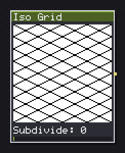
Draws the 2:1 isometric lattice as lines, diamonds, dots or one wireframe cube.
Iso Grid draws the 2:1 isometric lattice itself, a guide layer to draw on top of rather than art in its own right. Mode picks Lines, Diamonds, each rhombus filled solid, Dots, one mark per lattice point, or Cube, a single wireframe cube instead of a repeating lattice.
Projection switches the slope: 2:1 Dimetric is the pixel art standard, a 2-1 stair step and the default; True Iso is the real 30 degree isometric angle and steps unevenly in pixels; Military 1:1 is a 45 degree plan view. Unit decides whether the lattice is set by Tiles X and Tiles Y (0=auto) as a percentage of the canvas, or by an exact Tile width in pixels that does not change with canvas resolution, the setting to use when the grid has to match a specific tileset.
Subdivide adds finer lines inside each cell, for marking quarter or eighth steps by hand. In Cube mode, Size %, Height % and Anchor replace the tile controls, drawing one wireframe box instead of a repeating floor, useful for checking a prop's footprint against the lattice before modelling it as a real solid.
In: nothing · Out: image
Parameters
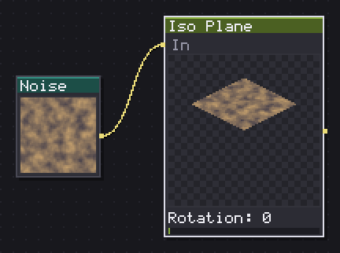
Maps a texture on to one plane of the isometric cube, or reads one back out flat.
Iso Plane maps a flat texture onto one face of the isometric cube, or reads one back out flat with Mode set to Unproject. Plane picks which of the six faces, Top, Left, Right, Bottom and the two back faces, used mostly for outputs like Normal or Height where the hidden faces still matter.
In Project mode, Shading and Light apply the category's one shared shading table to the mapped texture, so a plane and a full Iso Solid built from the same source read as one surface. Rotation turns the whole cube, snapped to the four sides at 0, 90, 180 and 270 unless Free rotation is on, and Mapping decides how the source texture's resolution lands on the diamond: Fit stretches it to the whole face, Tile keeps 1:1 texel to screen pixel scale along the edges, and Pixel keeps the tile's native resolution regardless of how big the face draws on screen.
Unproject is the useful inverse: feed it a rendered isometric tile and it reads the flat texture back out of whichever plane you point at, exact on the two wall faces and close, not exact, on the top, since the top's diamond grid does not line up one to one with square pixels.
In: In (image) · Out: image
Parameters
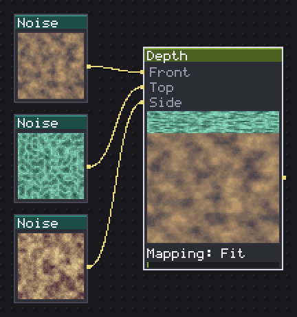
Gives a flat texture thickness and opens the top and side bands.
Depth gives a flat texture thickness by opening a top band and a side band out of the same solid, the classic wall-of-a-tileset trick: the front stays the texture you painted, and the top and side are the same texture squashed into the bands the camera angle opens up. It is not a 3D rotation of the picture, each face is its own flat parallelogram.
Tilt (top) is the pitch: 0 keeps the view straight on with no top band at all, 90 looks straight down and opens the top fully. Turn (side) is the yaw, deciding which side opens up and which way the front shears; positive and negative values open opposite sides. Depth % sets the slab's thickness as a percentage of the canvas height, so a thin wall reads as a lip and a thick one as a real block.
Wire different textures into the front, top and side inputs for a wall whose cap is different stone from its face; leave the top and side inputs empty and Depth reuses the front texture for all three, still correctly angled and shaded by Face shading. The whole solid stretches to fill the canvas, so a tile stays edge to edge at any Tilt or Turn.
In: Front (image), Top (image), Side (image) · Out: image
Parameters
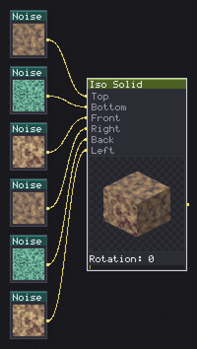
Builds one of thirteen isometric solids, a texture and a value per face.
Iso Solid builds one of thirteen shapes, Cube, ramps, corners, stairs, a wedge, a hex prism, a cylinder, a cone, a dome and more, out of up to six face textures, one per side. At rotation 0 you see the front texture on the screen-left rhombus and the right texture on the screen-right one, matching how an isometric game usually frames an object.
Leave a face input unwired and it falls back to the flat Empty face colour, so a fresh node already reads as a shaded solid before any texture is wired at all. Shape picks the form; Steps only applies to the two Stairs shapes, and Slices with Bands (0=smooth) only to the three turned shapes, Cylinder, Cone, Dome, where Bands is the same posterize-the-curve control the rest of Lighting uses, never a smooth gradient by default.
Light flips which side, Left or Right, reads brighter, and Outline adds a one pixel rim, either Darker, darkening whatever colour is already there, or a flat Outline colour. Output switches the whole node to hand back Normal, Height, Mask or ID instead of Color, which is how this feeds Light, Shadow or Occlusion without a second render: build the solid once, tap it for however many channels downstream needs.
In: Top (image), Bottom (image), Front (image), Right (image), Back (image), Left (image) · Out: image
Parameters
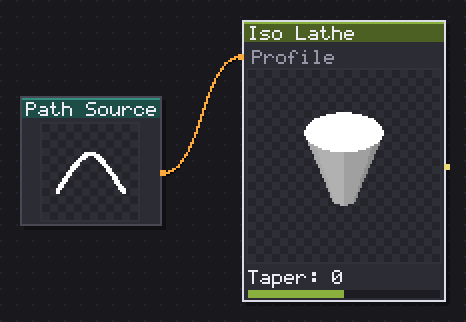
Turns a profile around the vertical axis: columns, vases, barrels, domes.
Iso Lathe turns a profile around the vertical axis, the same operation that makes a column, a vase, a barrel or a dome out of one curve. Profile picks one of seven built in shapes, Column, Barrel, Vase, Bell, Tower, Cone, Dome, when nothing is wired to the Profile input; wire a vector path in instead and the node reads it as its own radius curve, x as radius and y as height, both normalised to the curve's own bounding box.
Slices sets how many wedges the lathe divides its turn into, and Bands (0=smooth) posterises the curved shading into flat steps the way the rest of the category does for anything round, worth turning up, 4 to 6, rather than leaving at the smooth default if the result needs to read as pixel art rather than a render.
Taper narrows or widens the profile from top to bottom, negative values tapering toward the top and positive toward the bottom, on top of whatever the profile curve itself already does. Everything else, Light, Outline, Output, works the same as on Iso Solid, since both nodes share the same renderer underneath.
In: Profile (path) · Out: image
Parameters
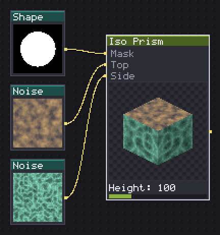
Extrudes a mask silhouette into an isometric solid, walls and lid textured apart.
Iso Prism extrudes a mask's silhouette into an isometric solid, with the walls and the lid textured separately. Feed it a mask from Vector Fill, Text, or any generator, and it becomes a solid block in the shape of that silhouette instead of a fixed primitive, which is what turns the whole Vector category into volume.
The top input fills the lid over the whole footprint and the side input runs along the walls a texel per pixel, so a brick texture on the walls actually reads as bricks going around the shape rather than stretched flat. With nothing wired to the mask input, the footprint defaults to one full tile, and the result is a Cube to the byte, so a fresh Iso Prism is a safe starting point before a real silhouette is wired in.
Height sets how far down from the top face the shape extrudes; past 200 the walls get tall enough to read as a tower rather than a block. This is the node behind carving a logo, a letter or a hex tile into a solid: Vector Text into Fill into Iso Prism gives a word standing up with a stone top in three nodes.
In: Mask (image), Top (image), Side (image) · Out: image
Parameters
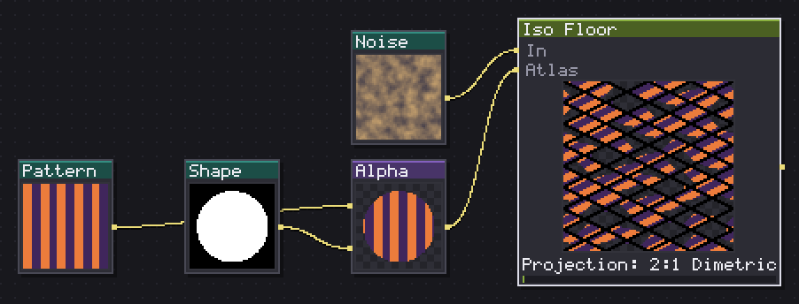
Stamps a texture on every rhombus of the isometric lattice, and tiles.
Iso Floor stamps one texture into every rhombus of the isometric lattice and repeats it, the ground plane of an isometric scene. Tiling wins over the exact geometry: the lattice periods are set to divide the canvas exactly, Tiles X and Tiles Y (0=auto), so the result always repeats cleanly even if that means the diamond's aspect is not quite the chosen Projection's true angle.
Thickness carves a joint or mortar line between rhombi, filled with Mortar; leave it at 0 for a floor with no visible seams at all, or push it up for cobbles or flagstones with grout lines between them. Bevel lights the two upper edges of each rhombus and darkens the two lower ones, the same shared shading the rest of the category uses, and reads as a slight lift per tile rather than a real height difference.
Wire an atlas texture into the second input and it wins over the plain texture on the first slot: Atlas cols and Atlas rows split it into variants, picked per cell either Random, hashed by Seed so the same seed always gives the same floor, or in Sequence, which is how a cobbled or broken floor avoids reading as one stamp repeated everywhere. Random flip and Random turn add more variety within that same guarantee of tiling.
In: In (image), Atlas (image) · Out: image
Parameters
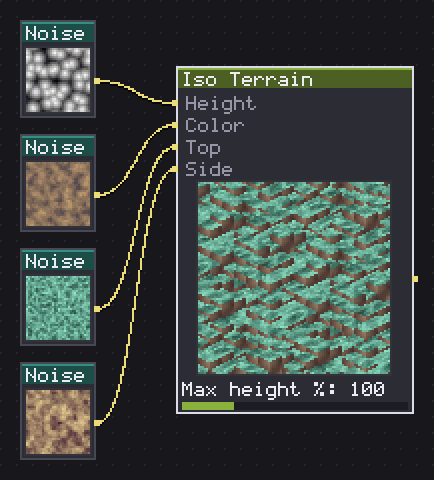
Raises an isometric column per cell, with slopes, water and textured lids.
Iso Terrain raises an isometric column per cell of a height map, the node that turns a height field into actual ground rather than a flat floor. The wired height map is read as luminance per cell and Terraces steps it into that many flat plateaus; a cell whose height pixel is fully transparent is skipped entirely, which is how you punch a hole or a cliff edge straight into the field.
Slopes turns the hard steps between terraces into ramps, at Slope height % of a full level, for rolling ground instead of a staircase of plateaus. Water level floods every cell below that terrace with the Water colour, and above the water line the terrain reads as usual, so a single node gives a lake sitting inside a landscape.
Wire a colour image in for a tone per column, a Gradient Map of the same height map is the obvious source, and texture images into the top and side face inputs instead of a flat colour on each. Max height % sets how tall the tallest column reaches, and Shading with Light apply the category's one shared table. This is the one node here that genuinely does not tile: columns lean out past the top edge with nothing to wrap around from the bottom, since cells paint back to front and depend on their neighbours' height.
In: Height (image), Color (image), Top (image), Side (image) · Out: image
Parameters
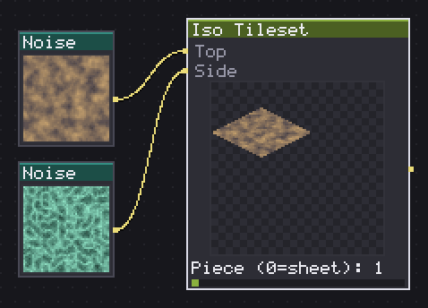
Renders a whole isometric tileset sheet -- floor, blocks, ramps, corners -- out of two textures.
Iso Tileset renders a whole sheet of tileset pieces, floor, blocks, ramps, corners, out of two textures, rather than one texture at a time. It is not a separate renderer: every cell is an Iso Solid drawing one of its own shapes at Tile width pixels with the same lamp and outline, which is why a tile cut from this sheet sits next to a loose Iso Solid without reading as two different scenes.
Sheet picks the piece list: Blocks 16, floor, cube, half cube, pillar, four ramps, four outer corners, four inner corners, one level, or Terrain 32, the same sixteen plus a second, raised level of ramps and corners and four wedges. Level height sets how tall one terrace step reads in pixels, which matters most on Terrain 32's two-level pieces.
Piece (0=sheet) pulls one cell out instead of drawing the whole sheet, indexed the same way an atlas node reads cells, useful for previewing a single piece or animating through the set one frame at a time. Everything else, Light, Outline, Output, matches Iso Solid, since a level is defined as a quarter of Tile width: a 45 degree ramp lands at half height in this 2:1 projection, the rule every reference tileset in the genre uses.
In: Top (image), Side (image) · Out: image
Parameters
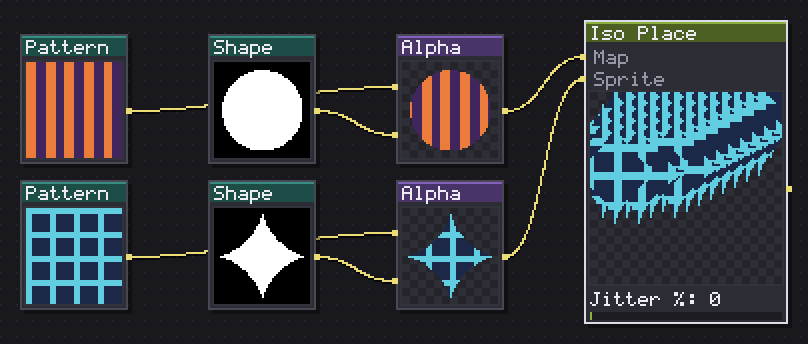
Plants a sprite on every lit cell of a map, back to front on the isometric lattice.
Iso Place plants a sprite on every lit cell of a map, painted back to front on the isometric lattice so a nearer instance always covers a farther one, the same order Iso Terrain uses for its own columns. Map means decides what the map's luminance is read as: Presence places one instance per lit cell, Elevation reads it as a terrace and lifts each instance Level height pixels per level, a village climbing a raised terrain, and Atlas cell reads it as an index into the sprite input, seen as an Atlas cols by Atlas rows grid, which is how three different tree sprites come out of one sheet.
Tiles X (0=map) left at 0 turns the map itself into the grid, one pixel one cell, for placing instances at whatever resolution the map was drawn at rather than a separate tile count. Scale % sets each instance's size and Jitter % randomises it slightly per cell, seeded by Seed, for a scattered village or forest instead of a rigid grid of identical props.
I run this over an Iso Terrain built from the same map, since both read the same lattice: the instances land exactly where the terrain columns are, without a second coordinate system to keep in sync.
In: Map (image), Sprite (image) · Out: image
Parameters
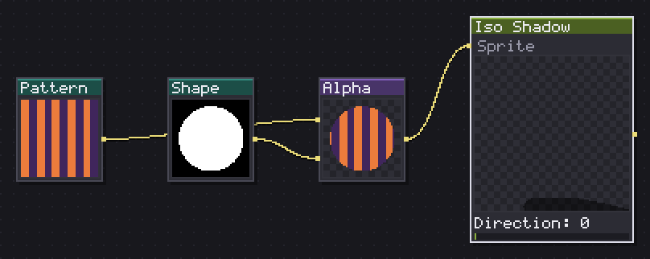
Shears a sprite silhouette along the ground into a hard isometric cast shadow.
Iso Shadow shears a sprite's silhouette along the ground into a hard isometric cast shadow, a straight affine shear of the alpha rather than a lighting calculation: no blur unless you count Dither, and no bounce light. Direction sets which way the shadow falls, and Snap to lattice axes locks it to the nearest lattice direction instead of a free angle, the way a whole hand-placed tileset gets its shadows drawn consistently.
Length % and Flatten % size the shadow: a vertical edge of height h ends up Length % times h long along the ground and Flatten % times that wide across it, so a low, spread out setting reads as noon and a long, narrow one as late afternoon. Ground line finds the sprite's lowest opaque row automatically, Bottom, or lets you set it by hand, Manual with Ground Y %, for a sprite whose feet are not at the very bottom of its own canvas.
Output at Shadow gives only the cast shape, meant to sit under the sprite on its own layer; Composite draws the sprite back on top of its own shadow in one image, useful for a quick preview or a single-node prop.
In: Sprite (image) · Out: image
Parameters
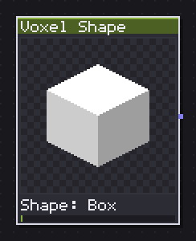
Builds a voxel box, sphere, cylinder, cone, torus or pyramid, solid or hollow.
Voxel Shape builds one of six primitive solids, Box, Sphere, Cylinder, Cone, Torus or Pyramid, straight into a voxel model rather than an image. It has no image inputs at all, since a voxel is not pixels: only Voxel Render turns the result into something you can see.
Size X, Size Y and Size Z set the grid in whole voxels along each axis, up to 64 a side. Hollow switches from a solid block to a shell Wall voxels thick, the fastest way to get a barrel, a pipe or a ring rather than a solid cylinder without carving anything by hand.
This is the starting point for the Voxel shelf: build a shape here, feed it into Voxel Combine to cut or add a second one, or straight into Voxel Transform to turn, mirror or resize it, then finish with Voxel Render for the actual sprite. Colour is flat, one tone for the whole shape, since shading itself is Voxel Render's job, Light, Bands, Occlusion, not this node's: a Voxel Shape on its own is geometry and colour only, nothing lit yet.
In: nothing · Out: voxel
Parameters
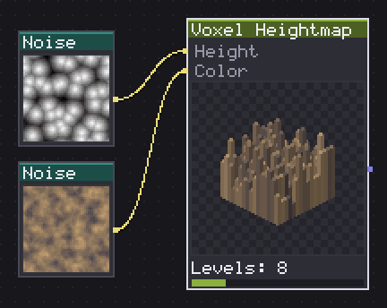
Raises a voxel column per cell of a height map, coloured by a second input.
Voxel Heightmap raises a voxel column per cell of a height map, coloured by a second input, the volumetric twin of Iso Terrain. Cells X and Cells Y set the footprint grid and Height sets the vertical range in voxels; Levels terraces the wired height map's luminance into that many steps, exactly like Iso Terrain's own Terraces.
A cell whose height pixel is fully transparent is a hole, not a zero-height column, the difference that lets a silhouette, rather than only a grayscale gradient, describe where the terrain actually exists: an island shape with a transparent background comes out as an island, not a full square block with a flat rim.
Colour sets the fallback tone; wire a second image into the node's colour input for a tone per column instead, the same Gradient Map source you would use on Iso Terrain's colour input works here too. Because the result is a voxel and not pixels yet, it needs Voxel Render downstream, at whichever of the eight directions the finished sprite is meant to face, with the lamp and outline set there rather than on this node.
In: Height (image), Color (image) · Out: voxel
Parameters
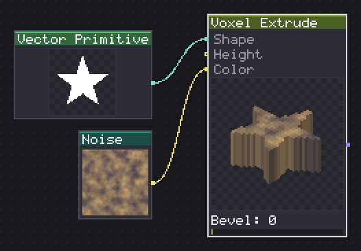
Raises a shape or a picture into a solid, as tall as a height map says, over a base and under a bevel.
Voxel Extrude raises a shape, a height map or a plain picture into a solid, over a flat base and under an optional bevel, and it is the one Voxel node built around a vector silhouette rather than only a raster one. The wired shape input takes a vector path and rasterises it at the model's own grid resolution, which keeps a curve looking clean whether the model is 24 cells or 64: the outline is redrawn at the target size instead of scaled from a fixed bitmap.
All three inputs, the height map, the colour image and the vector shape, are optional and any single one is enough: a shape alone gives a flat extrusion of that silhouette, a picture alone stands itself up using its own colours as the footprint, and all three together give a sculpted icon with its own outline, relief and paint. Rule picks Nonzero or Even-odd for how the vector's overlapping regions fill, mattering mostly on shapes with holes or self intersections.
Cells X and Cells Y set the footprint grid and Height the vertical range in voxels, same as on Voxel Heightmap. Base lifts the whole extrusion off the floor by that many voxels, Bevel rounds its top edge, and Levels terraces the wired height map the way Iso Terrain does. Invert height flips which end of the height map reads as tall, and Colour sets the fallback tone when nothing is wired to the colour input.
In: Shape (shape), Height (image), Color (image) · Out: voxel
Parameters
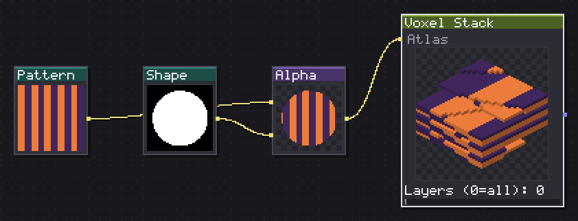
Stacks the cells of an atlas into a voxel model, one layer per cell.
Voxel Stack turns each cell of an atlas into one layer of a voxel model, from the bottom up, the sprite stacking technique used to fake 3D out of a stack of flat drawings. Atlas cols and Atlas rows cut the input into cells the way any atlas reader does, and each cell becomes a layer as wide and tall as the cell itself, so this node has no size sliders at all: the model's footprint comes straight from the cell size.
Layers (0=all) limits how many cells get used, in case the atlas has more cells than the model needs, a blank row at the end, say; leave it at 0 to stack every cell. First cell on top reverses the usual order, useful when the source atlas was drawn top down, as most sprite sheets are, rather than bottom up, as a stack naturally reads.
This is the fastest way to get a voxel model out of hand drawn pixel art rather than out of primitives: paint each slice of a character or prop as a flat sprite, arrange the slices in an atlas, and Voxel Stack turns the sheet into a model that Voxel Render can then turn around and view from any of the eight directions.
In: Atlas (image) · Out: voxel
Parameters
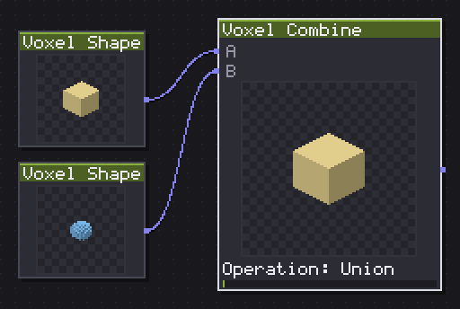
Unions, subtracts, intersects or repaints two voxel models at an integer offset.
Voxel Combine unions, subtracts, intersects or repaints two voxel models at an integer offset, the boolean toolkit for building a compound shape out of primitives instead of sculpting it directly. Operation picks Union, add B into A, Subtract, carve B's shape out of A, Intersect, keep only where both overlap, or Paint, repaint A's cells with B's colour wherever they overlap, geometry from A only.
Offset X, Offset Y and Offset Z place B relative to A in whole voxels before the operation runs, since the combine works on whole cells and needs the two grids lined up on an integer grid to mean anything. The result takes A's size, worth remembering when B is the larger of the two: build the bigger shape as A and cut or add the smaller one as B, not the other way round.
I use Subtract to carve a window or a doorway out of a Voxel Shape box, and Union to bolt a Voxel Extrude detail, a handle, an antenna, onto a primitive base, before the whole thing goes to Voxel Transform for a final rotation and then to Voxel Render.
In: A (voxel), B (voxel) · Out: voxel
Parameters
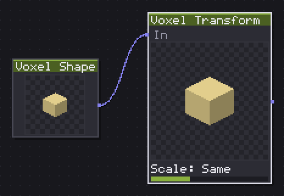
Turns, mirrors, moves, scales and crops a voxel model in whole voxels.
Voxel Transform turns, mirrors, moves, scales and crops a voxel model in whole voxels, the geometry toolkit for the whole shelf. Turn X, Turn Y and Turn Z snap to 90 degree steps by default; tick Free rotation for any angle, though that only really pays off with 3D also ticked.
3D switches the whole node from rebuilding the grid to carrying a transform on the model instead, drawn through by Voxel Render rather than resampled: with it on, a free rotation turns the model as a mesh with nothing lost to resampling, at any angle and any number of steps, since the model keeps the grid it arrived with and only gains a transform. With 3D off, every rotation or scale rebuilds the actual voxel grid, exact at 90 degree steps but lossy at a free angle repeated many times.
Scale offers Half, Same, Double or Custom, Scale X %, Scale Y %, Scale Z %, as a grid rebuild in voxel mode, or as a plain multiplier with no cost at all in 3D mode. Crop to content trims empty space around the model after a move or a mirror, off by default and unavailable once 3D mode is on, since a mesh transform has no grid left to crop.
In: In (voxel) · Out: voxel
Parameters
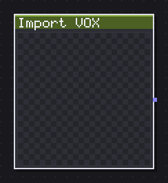
Reads a .vox model file: its first model, its grid and its palette.
Import VOX reads a MagicaVoxel .vox file: its first model if the file holds several, its own grid size, and the palette baked into the file. It has no image inputs, since it is where a voxel model enters the graph from disk rather than being built from nodes.
Flip Z flips the model along the vertical axis on the way in, worth trying first if an imported model comes in upside down: MagicaVoxel and Spaghetti do not agree on which way is up by default. The file itself is picked from the panel rather than typed as a parameter, the same way Import Image or Import SVG work in other categories.
Whatever Voxel Shape or Voxel Extrude can build from primitives and vectors, Import VOX brings in from a proper voxel editor instead, at whatever detail the artist put into it. From here it is a voxel like any other: wire it into Voxel Combine to merge it with a generated piece, into Voxel Transform to fit it to the scene's scale, or straight into Voxel Render to turn it into a sprite.
In: nothing · Out: voxel
Parameters
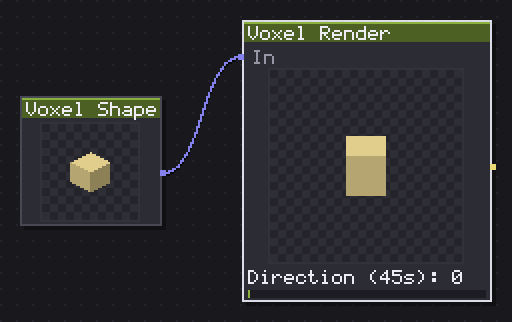
Draws a voxel model from eight directions, four isometric and four flat.
Voxel Render is the only node that turns a voxel model into pixels, from any of eight directions, four isometric views and four flat, band-on ones, with no free camera at all, on purpose: eight fixed angles is what an isometric or top down game actually needs.
Direction (45s) steps through the eight, 0 to 7, so keying it across eight frames in the timeline is the whole recipe for a turntable sheet, no extra nodes required. Voxel size is how many screen pixels one voxel draws as, the resolution knob for the whole render.
Shading and Light apply the same shared table every other node in this category uses, so a rendered voxel model sits next to an Iso Solid without reading as lit differently. Bands (0=off) posterises curved surfaces, a sphere, a cylinder, the same way Iso Solid's own Bands does, off by default here since voxel faces are already flat. Occlusion darkens corners where voxels crowd together, off at 0 and worth turning up only for a denser model where the extra read is worth the cost. Output switches to Normal, Height, Mask or ID exactly like the raster Isometric nodes.
In: In (voxel) · Out: image
Parameters